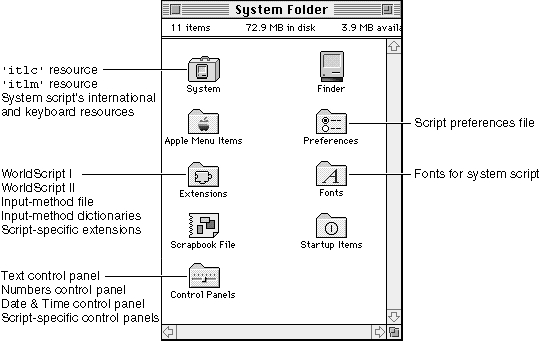

Installing and Enabling Script Systems
A user receives a script system in one of two forms: as a system script, already installed in the user's System file and System Folder; or as a secondary script consisting of a set of files that, if not present in the System file already, need to be installed before they can be used.
- Initialization
- The Operating System initializes the Script Manager at startup, and the Script Manager, along with WorldScript I and WorldScript II, initializes all installed script systems. If a script system is properly installed and successfully initialized, it becomes enabled (made available for use by the Script Manager and applications). For more information, see the discussion on testing for the Script Manager and script systems in the chapter "Script Manager."

Components of the System Script
Because localization of system software involves more than installing script-system resources--for example, system and Finder text strings need to be translated--the user typically does not install a system script. However, if the user has two separate systems with two different localized versions of system software, the user can change system scripts by using the "Update Install" command in the installer to completely replace one localized version's system script (and all other localized resources) with those of the other localized version.Once installed, the system script and associated files and resources are organized in the System Folder as follows (see Figure 1-59):
Figure 1-59 System-script components in the System Folder
- The essential resources that make up the system script are in the System file. This includes the script's
'itlb'resource and any of the following resources specified by the'itlb'resource:'itl0','itl1','itl2','itl4','itl5','trsl','itlk','KCHR','kcs#','kcs4', and'kcs8'.- The System file also contains an international configuration resource (
'itlc') and a script-sorting resource ('itlm').- The Keyboard resources needed for each type of supported keyboard (
'KMAP'and'KCAP'), though not considered part of any script system, are in the System file.- If the system script is a 1-byte complex script system or a 2-byte script system, the Extensions folder contains a script extension: either WorldScript I or WorldScript II, respectively.
- If the system script is a 2-byte script system, the Extensions folder contains one or more input-method files. The Extensions folder may also contain one or more dictionary files needed by the input method.
- Depending on its individual needs or version, the system script may also have an extension file of its own, a file of type
'scri'in the Extensions folder.- The Fonts folder contains the fonts needed by the system script.
- If the system script provides a control panel for the user, its control panel file is in the Control Panels folder. If the control panel allows the user to save script settings, there is a script preferences file in the Preferences folder to hold those settings. (The file is created the first time the user changes any settings.) Note that this control panel and preferences file are separate from the Text, Numbers, and Date & Time control panels described under "User Control of Script Settings" beginning on page 1-107.
- If the system script needs additional files, they are in the System Folder.

Components of Auxiliary Scripts
Auxiliary scripts consist of a set of resources and files mostly similar to those of a system script. The essential resources that make up the auxiliary script--an international bundle resource and any other international and keyboard resources needed by the script--may have been installed in the System file during system localization or may be contained in a file that is shipped separately from system software or applications. Other files are parallel to the files associated with a system script, as shown in Figure 1-59. (The closer a script system is to the U.S. version of the Roman script system, the fewer resources and files it has.)To install a separately shipped secondary script from the Finder, the user can simply drag the contents of a folder containing the script's resources and files to the System Folder. The Finder automatically installs the files and resources properly, as follows:
If a script system has been installed but not yet enabled (if the computer has not been restarted), the user can take the script system's resources back out of the System file. (When the System file is opened, the Finder displays any script files that can be moved out of the System file.) Once the script system has been enabled, its resources can no longer be removed from the System file with the Finder.
- The Finder installs the resources from the script file into the System file. That includes the script's
'itlb'resource and any of the following resources specified by the'itlb'resource:'itl0','itl1','itl2','itl4','itl5','trsl','itlk','KCHR','kcs#','kcs4', and'kcs8'.- The Finder places all system extension files, including input-method files, dictionary files, and files of type
'scri', into the Extensions folder. This includes the WorldScript I or WorldScript II script extensions, if included.- The Finder places all fonts for the script system into the Fonts folder.
- The Finder places any control panel documents for the script system into the Control Panels folder. (Once the user saves any new settings, a script preferences file is created in the Preferences folder.)
- The Finder places all other files into the System Folder.
Apart from installing a script system itself, users can always move fonts into and out of the Fonts folder, and input methods into and out of the Extensions folder.
- Disabling script systems at startup
- Holding down the Option-Space bar key combination at startup disables all (non-Roman) auxiliary scripts. This allows the user to remove auxiliary scripts from the System file that would normally have been enabled and thus impossible to remove from the Finder.
- Holding down the Shift key at startup prevents system extension files from executing--including WorldScript I and WorldScript II. If the system script requires a script extension, system messages may not display properly.